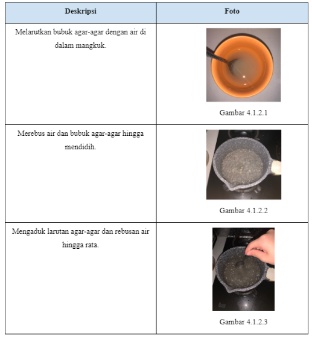
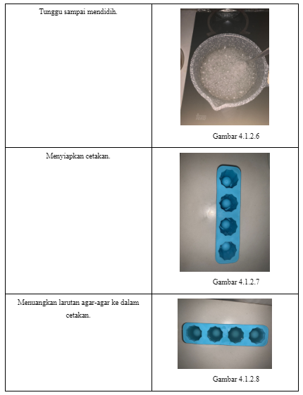
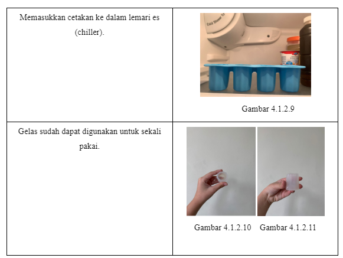

PEMBAHASAAN

4.1 Percobaan
4.2 Dokumentasi Percobaan




4.2 Hasil dan Pembahasan
Pada zaman sekarang, sampah plastik sudah menumpuk. Sebagai manusia, pasti sering sekali menggunakan plastik dalam kehidupan
sehari-hari. Gelas plastik adalah salah satu produk plastik yang banyak digunakan. Karena itu, peneliti ingin mencari alternatif
dari penggunaan gelas plastik, yaitu gelas yang terbuat dari agar-agar.
Dari hasil percobaan membuat gelas agar-agar dan penelitian, gelas agar-agar bisa menjadi alternatif gelas plastik karena bahannya
yang merupakan senyawa protein yang diekstraksi dari hewan, diperoleh dari jaringan kolagen hewan. Berdasarkan jurnal.unpad.ac.id,
kolagen adalah protein dengan kandungan sekitar 30% atau lebih dari protein total yang terdapat di kulit, tendon, tulang rawan,
dan organ. Ada 29 jenis kolagen yang telah ditemukan dengan struktur dan urutan asam amino yang berbeda. Kolagen mempunyai karakteristik
fisikokimia yang baik yaitu bersifat biokompatibel, dapat terurai di dalam tubuh (biodegradable), antigenisitas yang rendah, dan
nontoksik dengan berbagai aktivitas yang dapat mendukungnya sebagai sediaan farmasi.
Dari hasil percobaan peneliti, gelas agar-agar yang berukuran seperti shot glass dapat digunakan untuk air dengan suhu ruangan,
panas, dan dingin. Maka gelas hanya bisa menampung kurang lebih 30mL cairan, yang jauh lebih sedikit dibandingkan dengan gelas
plastik biasa yang bisa menampung sebanyak 350mL.
,
Tidak hanya sebagai penampung minuman, gelas agar-agar dapat dimakan. Agar-agar dapat membantu melancarkan pencernaan. Banyak nutrisi
baik yang ada dalam agar-agar. Nutrisi-nutrisi tersebut yang berperan penting untuk menunjang sistem kekebalan tubuh sehingga jadi
tidak mudah sakit. Agar-agar pun bisa dikonsumsi setiap hari.
Dari segi pelestarian lingkungan, gelas agar-agar tentu lebih ramah lingkungan. Gelas agar-agar membutuhkan waktu yang jauh lebih
singkat yaitu sekitar 7 hari untuk terurai secara alami. Selain itu, gelas juga dapat dimakan setelah digunakan. Karena sifatnya yang
bisa terurai, gelas agar-agar bisa dijadikan sebagai pupuk. Sebaliknya, gelas plastik tidak ramah lingkungan karena memerlukan waktu
yang sangat lama untuk terurai.
Namun, gelas agar-agar memiliki banyak kekurangan. Gelas agar-agar setelah sekali pakai tidak dapat didaur ulang atau digunakan untuk
hal-hal lain selain dijadikan pupuk. Hal ini dikarenakan bahannya yang memungkinkan untuk rusak dalam kondisi cuaca atau suhu ruangan
apapun. Sedangkan gelas plastik bekas dapat didaur ulang dan dijadikan barang yang berguna bagi manusia. Menurut peneliti, gelas ini
tidak efektif untuk penggunaan dalam jangka waktu yang lama.